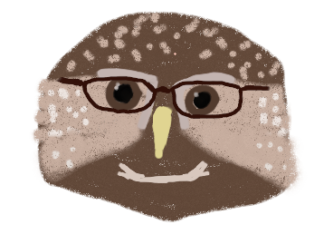
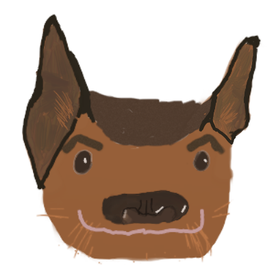

The CS Education Zoo
with your hosts Byrd and Wolfman
{kind=link}
Upcoming Shows
Previous Shows
Episode #6
Thursday, September 25, 12:15pm Eastern/9:15am Pacific
Guest: Mark Guzdial
http://computinged.wordpress.com/
@guzdial
http://www.cc.gatech.edu/home/guzdial/
Barbara Ericson
Blog Posts about Live Coding: 30 Sep,
1 Oct,
2 Oct, and
3 Oct
TOPLAP and Dagstuhl live coding report
Project GUTS and Irene Lee
Uri Wilensky at the Center for Connected Learning
Andrew Sorensen
Alex McLean Tidal
Bootstrap
Live Coding Weaves
Cognitive Apprenticeship
Students' Alternative Standards for Correctness by Kolikant Yifat
Pair Programming in XP and in CS education
Peer Instruction
Media Computation
Mark on Phil Sadler's Pedagogical Content Knowledge work
CSLearning4U
Parson's Programming Puzzles and at Runestone
Gidget
HyperCard
Legitimate Peripheral Participation and Situated Learning
Betsy DiSalvo
From Interests to Values (by DiSalvo and Bruckman)
Briana Morrison
@parkermiranda
Broadening Participation in Computing
Episode #5
Thursday, September 4, 6pm Eastern/3pm Pacific
Guest: David Nolen
@swannodette
http://swannodette.github.io/
https://github.com/swannodette
Episode #4
Monday, July 27, 3pm Eastern/noon Pacific
Guest: Rebecca Bates
http://bates.cs.mnsu.edu/
ASEE 2011 paper on AI and Sci Fi course
Kinesthetic Learning Activities
CS 201W: AI & SciFi Reading list
"They're Made Out of Meat" by Terry Bisson
Asimov
Hitchhiker's Guide to the Galaxy
The Diamond Age
Integrated Engineering Program
Orange Data Mining Toolkit
Iron Range Engineering Program
Twin Cities Engineering Program
Kinesthetic Learning Activities
CS 201W: AI & SciFi Reading list
"They're Made Out of Meat" by Terry Bisson
Asimov
Hitchhiker's Guide to the Galaxy
The Diamond Age
Integrated Engineering Program
Orange Data Mining Toolkit
Iron Range Engineering Program
Twin Cities Engineering Program

Episode #3
Tuesday, July 14, 4pm Eastern/1pm Pacific
Guest: Jeffrey Forbes
@jrnf
http://www.cs.duke.edu/forbes/
Christine Alvarado
Natural Prestidigitation
Kevin Wayne
Colleen Lewis
CS10k Project
SICP
Mehran Sahami
Jane Margolis's books: Stuck in the Shallow End Unlocking the Clubhouse
Gil Masters
Eric Roberts
Natural Prestidigitation
Kevin Wayne
Colleen Lewis
CS10k Project
SICP
Mehran Sahami
Jane Margolis's books: Stuck in the Shallow End Unlocking the Clubhouse
Gil Masters
Eric Roberts
 Episode #2
Episode #2
Tuesday, July 1, 3pm Eastern/noon Pacific
Guest: Rob Simmons
@simrob
https://github.com/robsimmons
http://simrob.com/
15-122 Principles of Imperative Computation
C0 Programming Language
Exam Wrappers
C0 Programming Language
Exam Wrappers
 Episode #1
Episode #1
Wednesday, June 18, 6pm Eastern/3pm Pacific
Guest: Kim Voll
@zanytomato
zanytomato.tumblr.com
www.rocketsrocketsrockets.com
Note: no guests or animals were harmed nor artistic talent used in the caricaturing process.